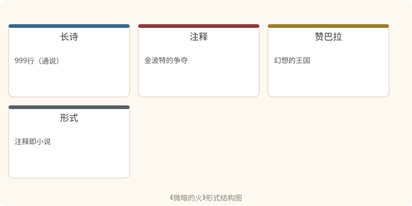

微暗的火
一、基本信息
| 作者 | 纳博科夫 |
|---|---|
| 成书/出版 | 1962年（作者页 B145 口径：微暗的火（1962）） Vladimir Nabokov — Encyclopaedia Britannica（百科全书） |
| 国别/地区 | 美国 |
| 时代 | 现当代 · 20世纪 |
| 体裁 | 长篇小说 |
| 语言 | 英语 |

《微暗的火》形式结构图（主题·结构图）
二、创作背景
作者页（B145）：纳博科夫 major_works 载'微暗的火（1962）'（B145 作者页定位，详见 luolita 条核对）。
结构（通说待核）：999行的长诗+前言+评注+索引——'小说'以学术注释的形态出现。
三、内容脉络
诗人谢德的绝笔长诗与金波特注释的'争夺'——赞巴拉王国的幻影（通说待核）。
四、主要人物表
| 人物 | 身份 | 说明 |
|---|---|---|
| 金波特 | 注释者 | （通说待核） |
| 谢德 | 诗人 | （通说待核） |
五、主题与艺术特点
- 注释即小说：形式的发明（通说）。
- 幻想与现实的争夺（通说待核）。
- '微暗的火'：莎剧引文（书名通说待核——出自《暴风雨》）。
六、影响与评论
- 作者页：纳博科夫代表作谱系（B145 作者页口径）。
Vladimir Nabokov — Encyclopaedia Britannica（百科全书） - 后现代元小说的里程碑（通说待核）。
Vladimir Nabokov — Encyclopaedia Britannica（百科全书）
七、阅读建议
难点
- 注释体的阅读顺序（按页码还是按正文）。
- 999行长诗。
- 《微暗的火》（上海译文出版社，通说待核）。
- 英文原版。
先《洛丽塔》后本作。
八、待核实
- 1962年出版（Random House说）核对。
- 金波特/谢德人名核对。
- 书名出自《暴风雨》的引文核对。